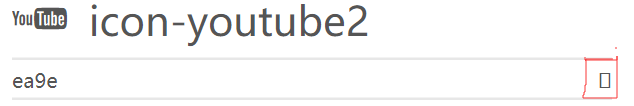
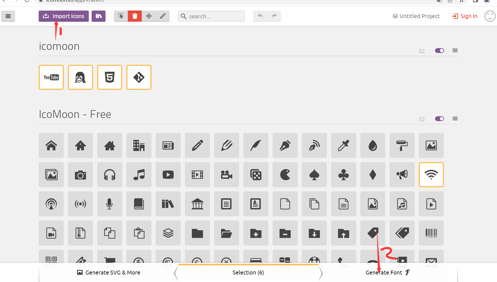

2.1字体图标的产生
字体图标使用场景︰主要用于显示网页中通用、常用的一些小图标
精灵图是有诸多优点的,但是缺点很明显。
- 图片文件还是比较大的。
- 图片本身放大和缩小会失真。
- 一旦图片制作完毕想要更换非常复杂。
此时,有一种技术的出现很好的解决了以上问题,就是字体图标iconfont,
2.2字体图标的优点
- 轻量级︰一个图标字体要比一系列的图像要小。一旦字体加载了,图标就会马上渲染出来,减少了服务器请求
- 灵活性∶本质其实是文字,可以很随意的改变颜色、产生阴影、透明效果、旋转等
- 兼容性:几乎支持所有的浏览器,请放心使用
注意:字体图标不能替代精灵技术,只是对工作中图标部分技术的提升和优化。
总结:
- 如果遇到一些结构和样式比较简单的小图标,就用字体图标。
- 如果遇到一些结构和样式复杂一点的小图片,就用精灵图。
2.3字体图标的下载途径
2.4字体图标的引用
- 第一步:font文件夹复制一份到对应网页文件根目录(为了解决兼容性)
- 第二步:在style引入css样式声明(复制固定部分过来就行)
- 第三步:复制下载字体文件里demo.html里的
- 第五步:在要用字体的标签指定和声明里font-face里font-family一样的名字
2.5字体图标的追加
如果工作中,原来的字体图标不够用了,我们需要添加新的字体图标到原来的字体文件中。

把压缩包里面的 selection.json 重新上传,然后选中自己想要新的图标,从新下载压缩包,并替换原来的文件即可。